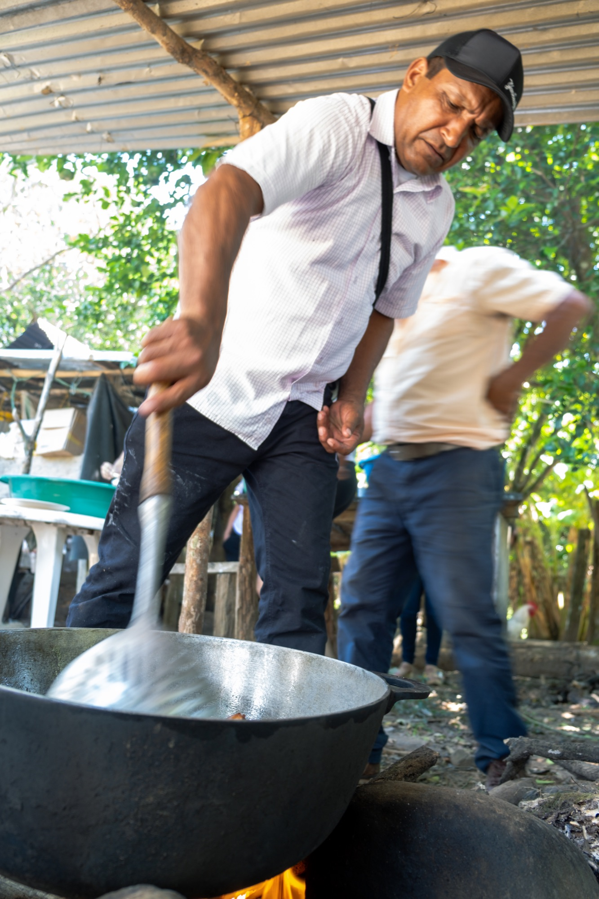

Arepas, Aguardiente y Musica Llanera
Casanare, Colombia (2024 - 2026)
En la finca de la familia Romero Granados, la cocina tiene una autoridad indiscutida. La matriarca la dirige con firmeza y su primera regla es que nadie se quede sin comer. Con la cuajada preparada el día anterior se hacen las arepas de maíz y, para celebrar un cumpleaños, se fríe el marrano, que ocupa el centro de la mesa.
Alrededor de ella, la fiesta tiene otro ritmo. Un primo pasa con la botella de aguardiente en la mano, asegurándose de que nadie se quede sin tomar. Los adultos se refrescan con cerveza y refajo bien frío, mientras los niños bajan al río, al pie de la montaña que se extiende hacia el este y da paso a las tierras calientes de los Llanos.
En Monterrey, un pueblo tranquilo del departamento de Casanare, el Año Nuevo se celebra con el mismo fervor que en el resto del país. De las casas salen el joropo y los vallenatos, y la fiesta se extiende a la calle. Algunos salen corriendo con las maletas alrededor de la manzana para atraer los viajes; otros se comen las doce uvas para pedir doce deseos. Pero lo más importante llega cuando suenan las doce campanadas: abrazar a la familia.
